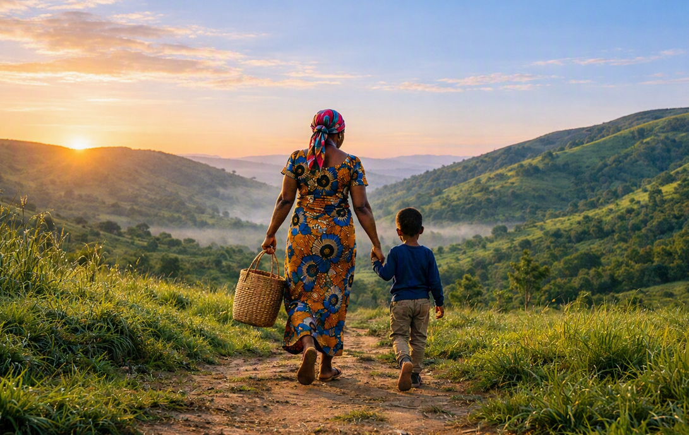
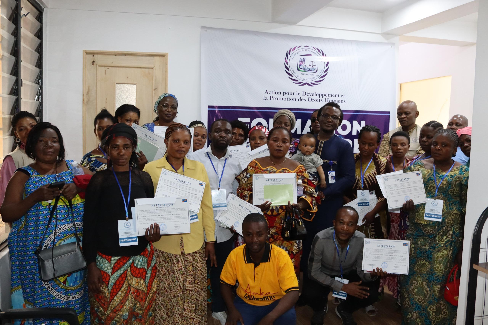
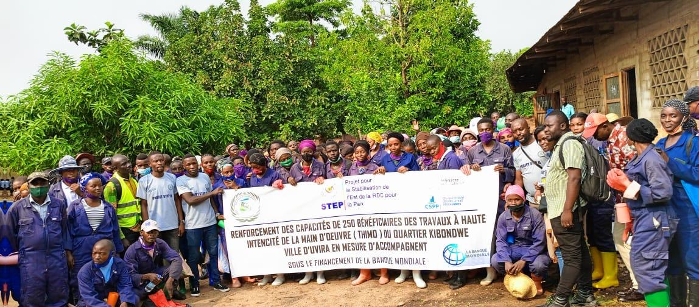
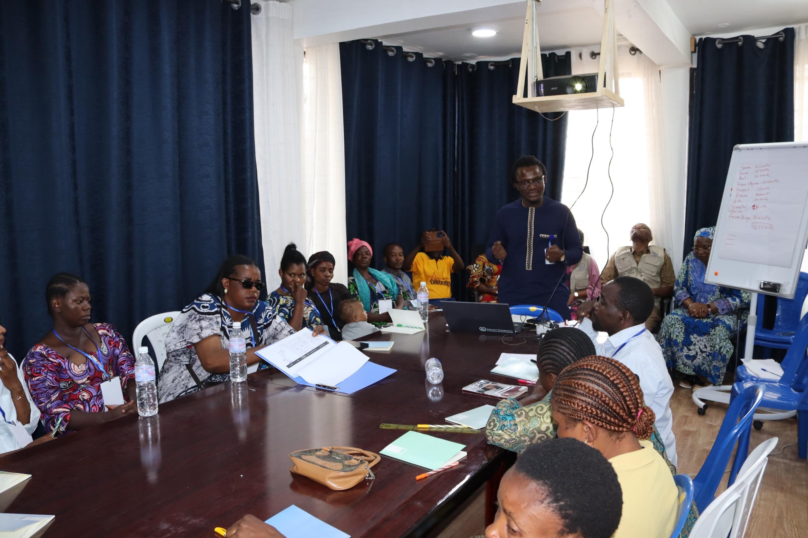

Développement humain & autonomisation communautaire
Renforcer les capacités, l’éducation et les initiatives économiques locales pour une autonomie durable.
Explorer nos activités
DEPUIS 2010 · RÉPUBLIQUE DÉMOCRATIQUE DU CONGO
La dignité humaine au cœur de chaque action.
Nous accompagnons les communautés vers un avenir plus solidaire, résilient et juste.
UNE CONVICTION, DEPUIS BUKAVU
Les solidarités locales sont le point de départ de notre engagement.
Créée en 2010, ADPDH contribue à l’autonomisation des populations vulnérables, à la protection de leurs droits et à leur résilience durable dans la région des Grands Lacs.
Découvrir notre organisation02 — NOS DOMAINES D’INTERVENTION
Des actions complémentaires, reliées par un principe : placer la dignité humaine au centre de chaque intervention.
Renforcer les capacités, l’éducation et les initiatives économiques locales pour une autonomie durable.
Explorer nos activitésProtéger les populations vulnérables, répondre aux urgences et accompagner les personnes affectées par les violences.
Aide humanitaire et protection ; lutte contre les violences basées sur le genre, protection femme-enfant, santé mentale et soutien psychosocial.
Porter la voix des communautés, favoriser le dialogue et préserver les ressources partagées.
Plaidoyer, alerte et consolidation de la paix ; préservation de l’environnement et accès à l’eau, l’hygiène et l’assainissement.
Promouvoir le respect des droits des personnes détenues et faciliter leur réinsertion sociale et économique.
Accès à la justice et réinsertion des personnes détenues, dans le respect de leur dignité.
AU PLUS PRÈS DU TERRAIN
Épargne, leadership et réintégration économique : trois formes concrètes de notre engagement.

Création et maturation des AVEC, formation à la gestion des activités génératrices de revenus et accompagnement des femmes et des jeunes entrepreneurs.
Instruction de base en français, swahili et mashi, formation à la gouvernance et à l’épargne, puis accompagnement des entreprises.
Des formations et des espaces de dialogue qui renforcent l’autonomisation et la cohésion sociale au Sud-Kivu.
Découvrir l’activité →ADPDH, partenaire facilitateur de travaux à haute intensité de main-d’œuvre à Kamituga, Bukavu et Uvira.
Projet financé par la Banque mondiale via STEP, sous tutelle du Ministère des Finances (CSPP). Sites : Kamituga ; Mulambula et Kanoshi à Bagira ; Mulongwe et Kasenga à Uvira.
04 — NOTRE IMPACT
Au-delà de la formation, nous suivons la mise en pratique des acquis et la continuité des activités économiques.
Source : indicateurs communiqués par ADPDH. Les indicateurs AVEC et AGR ne comportent pas encore de date de référence.
Consulter les indicateurs et leurs sources →Membres formés appliquent la séparation entre la caisse de leur activité et celle du ménage.
Activités génératrices de revenus toujours actives six mois après la formation.
LES VOIX DES COMMUNAUTÉS
Les premiers témoignages réels sont en cours de collecte. Cet exemple présente le futur format des récits.
Découvrir les témoignages →« Je distingue mieux les besoins de mon activité de ceux de mon foyer. Cette organisation m’aide à préparer les prochaines étapes. »
05 — DEVENIR PARTENAIRE
Institutions, bailleurs, organisations et partenaires techniques : construisons des collaborations au service des communautés.
ACTUALITÉS
Contenus de démonstration en attendant les premières publications validées par ADPDH.

Formation
des exercices pratiques permettent de découvrir la tenue d’une caisse et la distinction entre dépenses du foyer et dépenses de l’activité.
Date à renseigner
Lire l’article →
AVEC
une rencontre de groupe autour des objectifs d’épargne, des règles communes et de la participation de chaque membre.
Date à renseigner
Lire l’article →RESSOURCES & TRANSPARENCE
Présentation institutionnelle, plan stratégique et rapports : les documents seront accessibles dès leur mise à disposition.
Voir les ressourcesCHAQUE CONTRIBUTION COMPTE
Contribuez aux actions menées auprès des communautés que nous accompagnons.
Faire un donPARLONS-EN
305, avenue Patrice Emery Lumumba
Commune d’Ibanda, Bukavu
Sud-Kivu, République démocratique du Congo